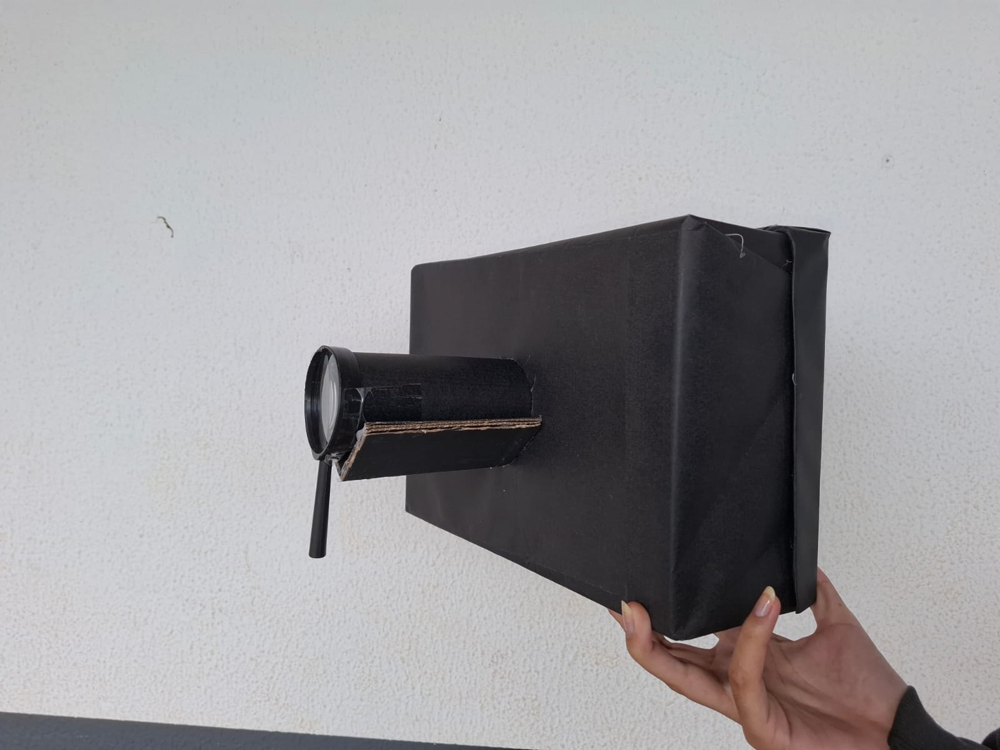
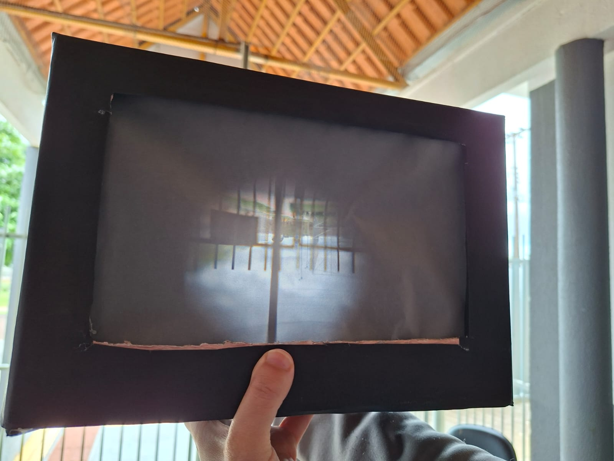
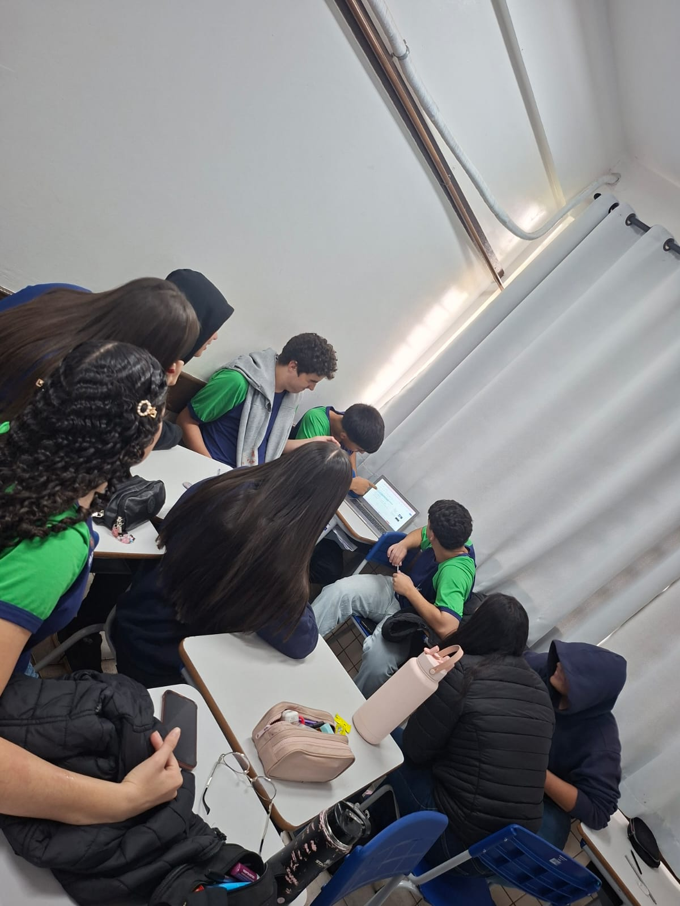
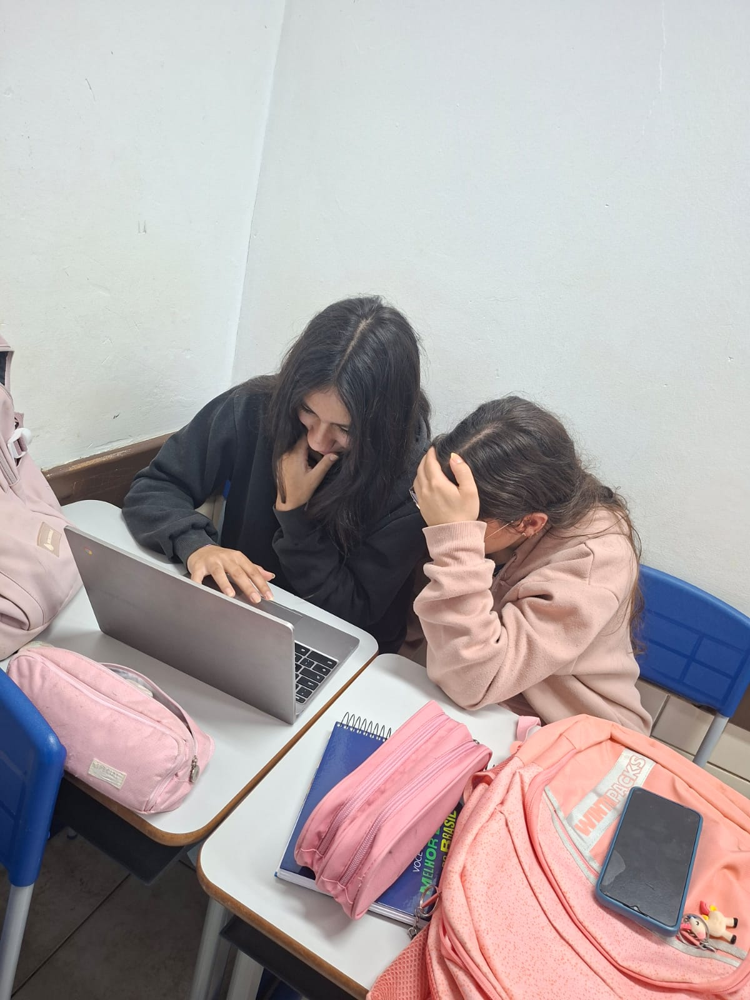
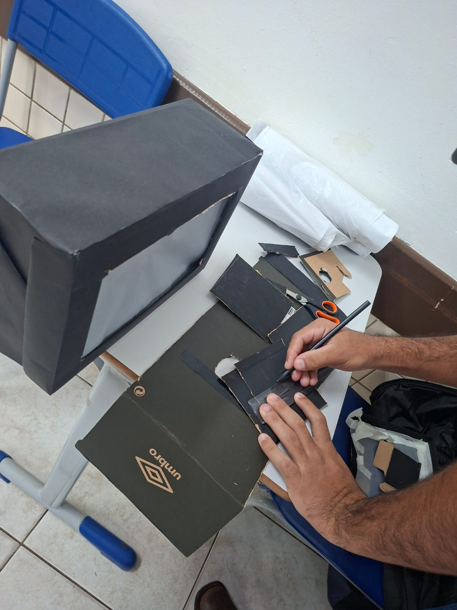
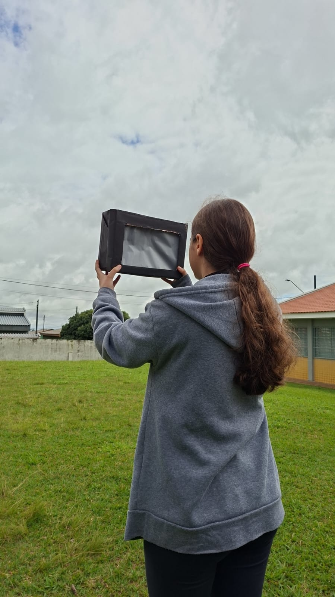

Camera Escura
Matéria: Tec.Ciencia/Fisica | Data: Agosto de 2026
Oque ela é?
A câmera escura é um dispositivo óptico ancestral que deu origem à fotografia moderna. Trata-se de uma caixa ou sala totalmente vedada contra a luz, contendo apenas um pequeno orifício (chamado stenope) em uma das suas paredes.

Como funciona?
A câmera escura funciona com base em um princípio bem simples da física: a luz viaja em linha reta.
Quando você tem uma caixa ou sala totalmente escura e faz apenas um pequeno furo em uma das paredes, a mágica acontece:
1. A luz entra pelo furo: A luz do sol bate nos objetos do lado de fora (como uma árvore ou uma pessoa) e é refletida em todas as direções.
2. Os raios se cruzam: Os raios de luz que vêm do topo do objeto viajam em linha reta para baixo ao passar pelo furo. Já os raios que vêm da base do objeto viajam para cima.
3.A imagem se projeta invertida: Ao atingirem a parede oposta dentro da caixa, esses raios formam a imagem do lado de fora, só que totalmente de cabeça para baixo e espelhada.
Para ajustar a imagem, o tamanho do furo faz toda a diferença: um furo menor deixa a imagem bem nítida, mas fraca; já um furo maior deixa tudo mais claro, porém meio embaçado. Mais tarde, os cientistas perceberam que colocar uma lente de vidro nesse furo deixava a imagem clara e focada ao mesmo tempo.

Imagens da produção



